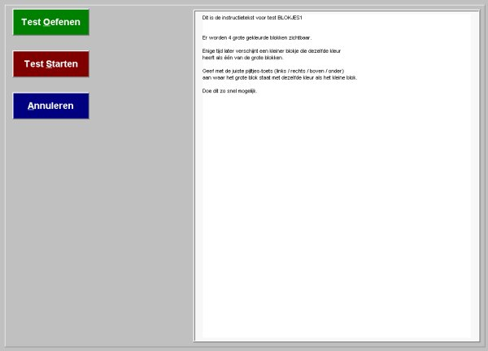

|
Een test afnemen
INHOUDSOPGAVE
Starten
van uit de ID-Testorganizer
Startvenster
Oefenen
voordat testafname wordt gestart
Testafname
annuleren
Testafname
starten
Een
gestartte test onderbreken
Starten
van uit de ID-Testorganizer 
Onderdelen van de module NeuroPsychologische
Testen, dus ook het onderdeel
Een test afnemen, worden altijd
gestart vanuit de ID-Testorganizer.
Starten vanuit de ID-Testorganizer
gaat als volgt:
Kies eerst een patiëntnaam
en zorg ervoor dat in het vak Modulen NeuroPsycho is geselecteerd.
Dubbelklik in het vak met de aanwezig
protocollen de regel met het gewenste protocol. Het protocol wordt bijgeplaatst
in het vak met de reeds uitgevoerde en nog geplande testen. Selecteer in
dit vak de regel met de af te nemen geplande test en klik vervolgens op
de knop Start Selectie. Wanneer er slechts 1 geplande test staat, dan kan
ook geklikt worden op de knop Start (staan er meer geplande testen dan
worden die allemaal achtereenvolgens gestart na klikken op de knop Start).
Onderstaand venster wordt zichtbaar
na start afname van een test.

Er zijn 3 grote knoppen zichtbaar.
Die kunnen worden bediend door een
muisklik op de gewenste knop òf door de lettertoets in te drukken
die in de gewenste knop is onderstreept.
In het kladblokvenster naast de
knoppen staat de instructietekst behorend bij de gekozen test.
Oefenen
voordat testafname wordt gestart 
Klik met de muis op knop Test Oefenen
of druk op de toets O.
Een Oefen-test uitvoeren. Een Oefen-test
moet altijd compleet woren afgemaakt. Aan het einde van de Oefen-test wordt
gevraagd of nog meer geoefend moet worden.
Testafname
annuleren 
Klik met de muis op knop Annuleren
of druk op de toets A.
Zie verder bij: Een
gestartte test onderbeken.
Testafname
starten 
Klik met de muis op knop Test Starten
of druk op de toets S.
Na uitvoer van de laatste taak van
een test wordt onderdeel Testafname gestopt en wordt de ID-Testorganizer
opnieuw gestart.
Tijdens
een testafname worden alle specifieke Windows-toetsen (zoals Alt-Tab, Control-Alt-Del
en de Windows-Start-toets) geblokkeerd om te voorkomen dat tijdens
testafname andere programma's gestart kunnen worden.
Een
gestartte test onderbreken 
Een gestartte testafname mag alleen
worden onderbroken wanneer dat is ingesteld in het testprotocol (klik
hier voor meer informatie).
Wanneer onderbreken is toegestaan
dan kan dat worden uitgevoerd door indrukken van de toets Escape op het
toetsenbord.
Er verschijnt een venster met de
keuze Doorgaan / Pauzeren / Negeren (maar let
op: een reeds gestart item wordt eerst afgehandeld, pas dan
verschijnt dit venster).
Keuze Doorgaan: toch doorgaan met testafname.
Keuze Pauzeren:
de testafname wordt tijdelijk gestopt, maar pas wanneer het goede patiënt
paswoord is ingetoetst !
Er wordt teruggekeerd naar de ID-Testorganizer
en ook hier moet ter bevestiging het paswoord worden ingevoerd.
De test wordt NIET afgevinkt en
kan op een later tijdstip vanuit ID-Testorganizer opnieuw worden gekozen
en gestart. De testafname wordt hervat nà het laatste uitgevoerde
item van de afgebroken test.
OPMERKING: Let erop dat objecten
en instellingen, die in een eerder item werden ingesteld en gedurende het
vervolg van de test actief of geldig blijven, nu NIET worden uitgevoerd.
Dat geldt bijvoorbeeld voor de instelling van Early Respons Time en het
Resultaat-Memo tonen.
Keuze Negeren:
de testafname wordt afgebroken, maar pas wanneer het goede patiënt
paswoord is ingetoetst
!
Er wordt teruggekeerd naar de ID-Testorganizer
en ook hier moet ter bevestiging het paswoord worden ingevoerd.
De test wordt afgevinkt en kan daarom
op een later tijdstip NIET opnieuw worden gekozen en gestart.
BELANGRIJK
!!
Tijdens
een testafname worden alle specifieke Windows-toetsen (zoals Alt-Tab, Control-Alt-Del
en de Windows-Start-toets) geblokkeerd om te voorkomen dat tijdens
testafname andere programma's gestart kunnen worden.
Om diezelfde reden mag de Windows-Taakbalk
niet continu zichtbaar zijn en mogen ook geen extra menu-programma's zichtbaar
zijn (waaronder de Office werkbalk).